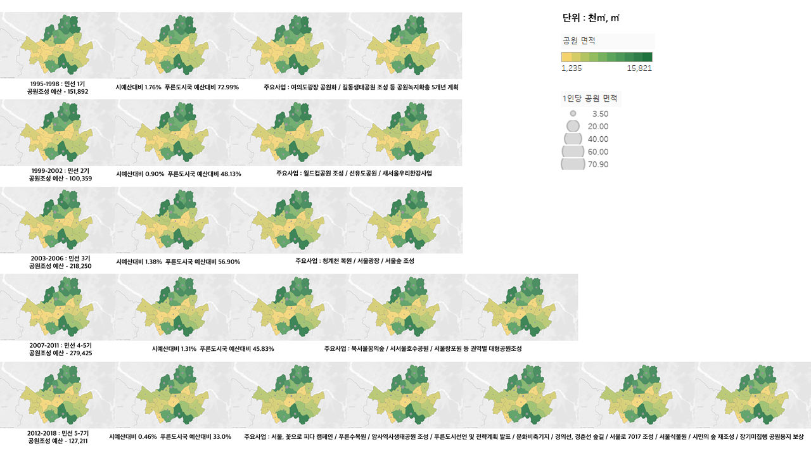
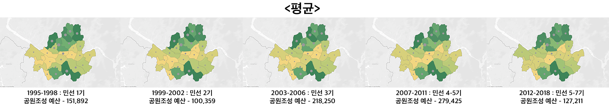

1) 들어가며
고하정에 따르면 도시는 인구집중화 및 시가지 건조화로 인해 기후변화, 생태계 파괴 등 다양한 도시문제를 안고있고[1], 김영대는 1995년 당시에 지방자치의 도입으로 욕망에서 비롯되는 난개발을 우려하며, 현대도시의 도시 공원녹지가 지닌 가치를 상기시켜야함을 강조한다[2].도시공원은 다른 형태의 녹지보다 접근이 쉬워, 지역활성화, 거주가치 향상 등 사회문화적 가치가 높다. 따라서 급격하게 팽창한 도시의 서울엔 집중된 인구밀도와 삭막해지는 도시에 완충지로서의 공원은 절실하다.
산림청에 따르면 도시숲은 열섬현상의 완화기능과 소음감소, 대기정화기능을 가지고 있으며, 서울시에서는 2020년 장기미집행 도시공원 일몰제 실효를 앞두고 대상부지 118.5㎢를 보상하거나 도시자연공원구역으로 지정하는 방법으로 모두 공원 용도로 보존하는 대책을 발표하면서 도시 공원의 중요성을 방증하기도 했다.
공원의 기능과 중요성에 2005년도, 정부는 ‘도시공원법’을 전면개정하였고, 공원의 여러 현황을 파악하고 이를 바탕으로 시민의 정서생활 향상에 기여하기 위한 기초자료로 활용하고 있다.
도시 구간 변경이나 신규 건물 건축할 때에 시민의 여가, 휴식 등을 위한 도시공원, 녹지 등을 위한 공간을 할당할 것을 의무화하고 있다.
2) 시각화 방법 및 범위
도시 공원 조성에는 토지 확보와 조성 비용 비중이 크기 때문에 공공의 예산 투입이 중요하다.1990년 지방자치 시작과 1995년 민선체제 도입으로 관선체제의 6개월 1년의 짧은 임기가 아니라 4년으로 늘어나게 되면서 도시공원과 녹지에 충분한 시간과 예산을 쓸 수 있게 되었다.
이에 민선의 정책방향과 예산에 따른 공원의 양적 확장을 파악하고자 했다. 나아가서 양적확장에 따라 자치구 별로 시민 1인당 공원 면적의 추세 또한 시각적으로 제시하고자 했다.
분석 데이터는 서울시에서 제공하는 2000년부터 2019년까지의 서울시 예산안과 1인당 공원면적으로 삼았다. 1인당 공원 면적이라는 것은 조성된 도시공원 면적을 도시지역의 인구수로 나눈 것이다.
서울 시민이 누릴 수 있는 공원 면적을 서울시의 예산과 연결 짓고, 이를 시각화하여 서울 어느 자치구에 공원 확장의 예산이 더 필요한지를 살펴보았다. 나아가 경부고속도로 지하화에 따른 서초구와 서울시의 대립을 공원 면적의 관점에서 확인했다.
3) 서울시와 공원
시각화 방법으로는 시점별 데이터를 여러 장의 지도로 표현 가능하게하는 스몰 멀티플즈 방식으로 시계열에 따른 민선별 공원의 양적 확장을 지도에 맵핑하였다.
[그림1]
뚜렷한 시각적 결과를 얻기 위해 민선의 재직 기간 동안 공원 면적의 평균을 내고, 서울시 지도에 [그림2]와 같이 맵핑하였다.

[그림2]
1995년부터 2018년도까지 공원 면적에 따라 10단계의 색으로 구분하였고 그 위에 1인당 공원면적을 원형으로 표현하였다. 이에 따라 어느 자치구에 공원이 더 필요하고 예산을 균형있게 편성해야 할지 확인할 수 있었다.

[그림3]
1인당 공원면적이 가장 좁아, 공원 확보가 필요한 자치구는 동대문구로 1인당 3.5㎡로 서울 자치구에서는 유일하게 도시공원 및 녹지 등에 관한 법률상 시민 1인당 도시공원 확보 기준 6㎡로 법적 확보 기준을 넘지 못했다.

[그림4]
서울을 생활권역 별로 나눴을 때, 동북권이 눈에 띄는 공원 면적을 가지고 있었으며, 서남권의 공원 확보가 더욱 필요하다는 것을 확인할 수 있었다.
도심권에서는 종로구가 11만㎡와 1인당 공원 면적 70㎡로 동북권에서는 강북구가 14만㎡와 1인당 공원 면적 44㎡, 동남권에서는 서초구가 16㎡와 1인당 공원 면적 36㎡, 서남권에서는 관악구가 10㎡와 1인당 공원 면적 21㎡, 서북권에서는 은평구가 13㎡와 1인당 공원 면적 28㎡로 각 생활권역 별로 가장 쾌적한 공원 면적을 가지고 있었다.
한편, 공원 조성이 가장 필요한 곳으로 도심권에서는 용산구가 1만㎡과 1인당 공원 면적 7㎡, 동북권에서는 동대문구가 1만㎡와 1인당 공원 면적 3㎡, 동남권에서는 공원면적으로 비교했을 때는 송파구가 4만㎡ 로 3만㎡인 강동구를 조금 앞서나, 1인당 공원 면적으로 강동구가 조금 앞섰다. 서남권에서는 금천구가 2만㎡로, 1인당 공원 면적으로는 양천구가 6㎡로 확보가 필요한 공원 면적을 갖고 있었으며, 서북권에서는 마포구가 4만㎡와 1인당 공원 면적 11㎡로 가장 좁은 공원 면적을 갖고 있었으나 다른 생활권역 대비 넓은 면적을 보여주었다.

[그림5]

[그림6]
민선 체제 도입 이후, 공원 면적이 가장 넓어진 자치구를 살피기 위해 [그림5] 1995년도와 [그림6] 2018년도를 비교해보면, 마포구의 공원 면적인 1800만 ㎡에서 4400만 ㎡로 가장 넓어졌고, 용산구의 공원 면적은 2736만 ㎡에서 1796만 ㎡로 좁아졌다.
더 나아가, 경부고속도로 지하화와 상부공간 녹지조성의 문제로 의견을 조율중인 서울시와 서초구의 사안을 살펴보았다. 서초구는 도로의 지하화로 쾌적한 교통과 상부공간을 공원과 문화의 공간으로 쓸 계획을 꾀하고 있지만 서울시에서는 강남에서는 이미 영동대로 지하복합환승센터 및 현대자동차 글로벌비즈니스센터(GBC) 건립과 잠실종합운동장 주경기장 리모델링 등을 포함한 동남권 국제교류복합지구 개발이 집중되어서 강남과 강북의 불균형이 커지는 것을 우려하고 있는 것으로 보인다.
따라서 단순히 자치구의 공원 면적, 공원 조성의 관점으로 경부고속도로 지하화를 바라봤을 때, 서초구의 공원 조성이 타당할지 확인했다.
서초구의 총 공원 면적은 지난 1995년도부터 2018년까지 1500만 ㎡ 에서 1600만㎡ 으로 증가하였고 1인당 공원 면적은 37.50㎡ 에서 36.60㎡ 로 감소하였다. 경부 고속도로 지하화 경우 + 공원 면적 60만㎡으로 총 1660만㎡ 가 더해지게 된다.
해당 시각화에서는 서초구는 서울시에 가장 넓은 공원 면적과 세번째로 넓은 1인당 공원 면적을 가지고 있음을 보여준다.
균형발전이라는 서울시의 입장을 고려했을 때 충분히 납득할 수 있는 부분이다.
4) 나오며
서울시의 예산과 이에 따른 공원의 양적 확장을 시각화를 통해 그 흐름을 살펴보았다. 명백한 시각적 흐름을 확인하기 위해 각 데이터의 스케일을 일부 조정하였음에도 뚜렷한 차이를 나타내기에 미흡하였다. 그럼에도 불구하고 서울시의 생활권역, 자치구별 비교를 통하여 서울시의 공원 조성 예산이 어느 곳으로 분배되어야 적절할 것인지 도출할 수 있었다.더 나아가 공원의 종류와 목적을 분류하여 시각화를 한다면, 공원의 접근성과 중복 여부를 따져 실질적으로 시민들이 공원을 활발하게 이용할 수 있는지를 도출할 수 있을 것이다.
5) 참고문헌
[1] 고하정. (2020). 서울시 도시공원조성예산 변동 추세-예산서를 중심으로. Journal of the Korean Institute of Landscape Architecture, 48(3), 1-11.[2]김영대. (1995). 특집 / 도시 공원녹지와 시민생활 : 우리나라 도시 공원녹지의 문제점과 개선방향. 도시문제, 30(320), 9-20.
이미지 [그림5] https://planning.seoul.go.kr/plan/main.do